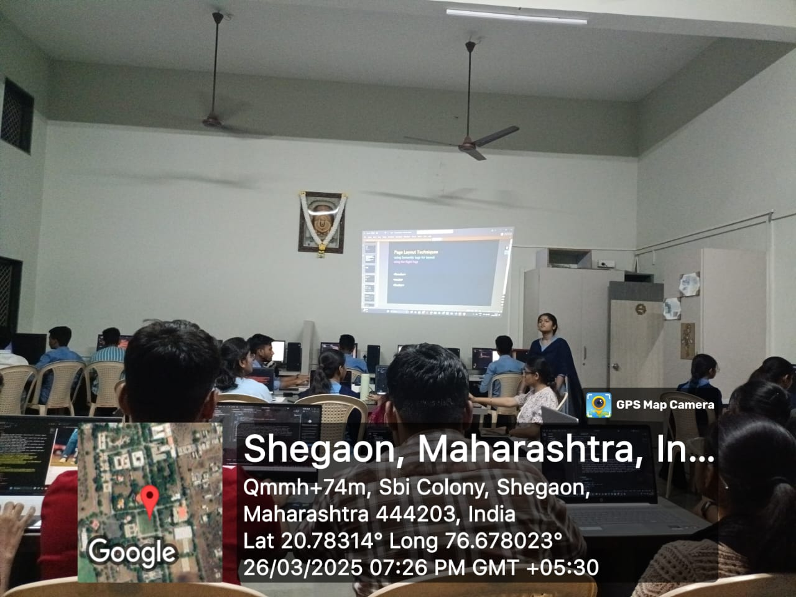
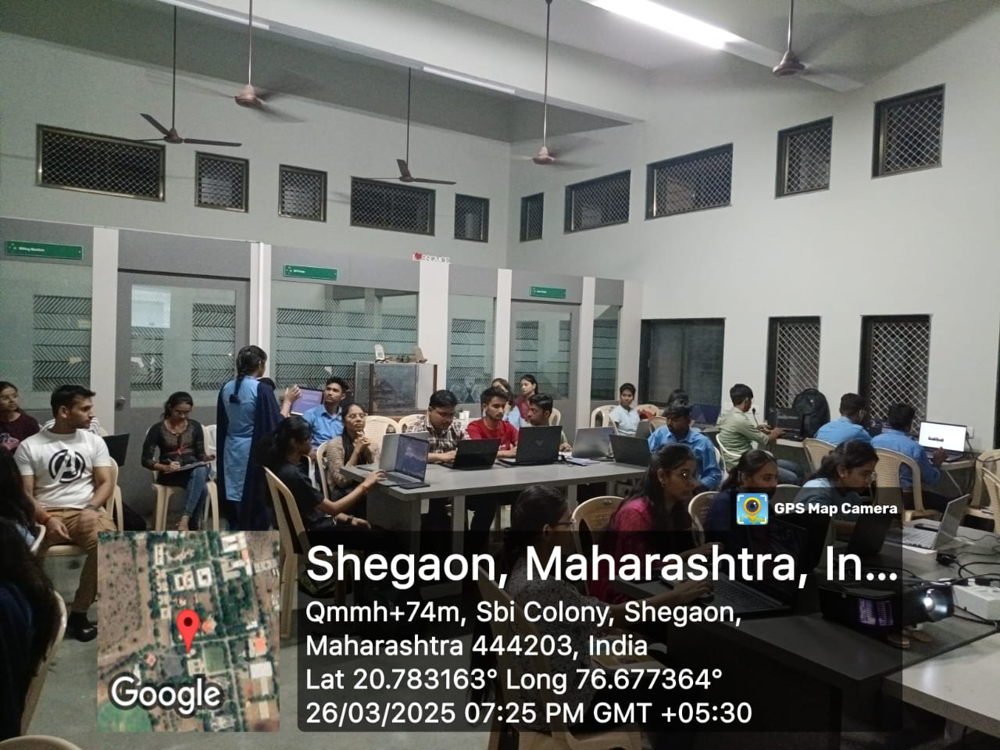
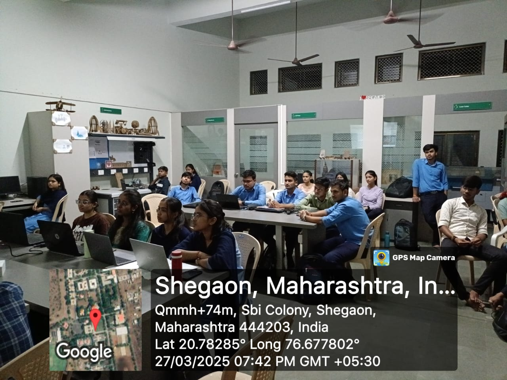
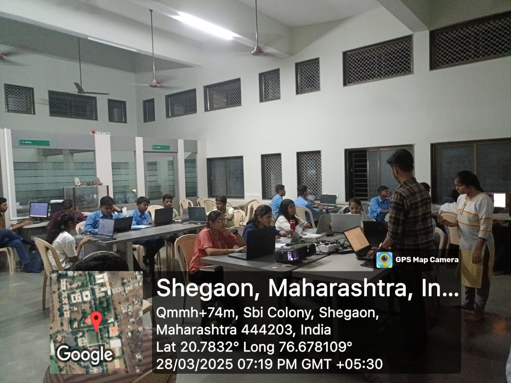

MODULE1:WEB DEVELOPMENT
Day 1: Exploring the Foundations of HTML

Stepping into HTML felt like unlocking the core of the web. Every webpage has a structured foundation, and today, I explored how it all begins:
The Essential Skeleton:html, head and body form the backbone of any webpage.
Organizing Content: Headings (h1 to h6) create a clear, readable structure.
Making Pages Dynamic: Hyperlinks and images bring life to a blank page.
Understanding these fundamentals showed me that a webpage is more than just text—it's a structured blueprint ready for design and interactivity.
Day 2: Structuring Content for Better Readability

Raw text alone isn’t enough—structure and readability are key. Today, I focused on organizing content effectively:
Enhancing Readability: Bold, italics, and underline highlighted key points.
Layout Elements: div and span grouped content logically for easier styling.
Semantic HTML: header, footer and section improved structure and accessibility.
Well-structured HTML makes webpages cleaner, more maintainable, and enhances usability for a better user experience.
Day 3: Understanding HTML Structure

Websites aren’t just static—they organize and collect data. Today, I explored how HTML lays the foundation for this:
Lists: Improve readability and navigation.
Tables: Structure complex data with table, th, tr, and td.
Forms: Enable user interaction with input fields, checkboxes, and buttons.
Seeing how webpages gather and structure information was a game-changer—HTML is the first step toward building interactive experiences.
Day 4: Styling with CSS

Today was all about transforming plain HTML into a visually appealing webpage using CSS.
Understanding Selectors: Learned how to target elements using class, ID, and tag selectors.
Playing with Colors & Fonts: Explored how color, background-color, and font-family enhance design.
The Power of Spacing: Used margin and padding to control layout and create a balanced structure.
Seeing how simple CSS properties can completely change the look and feel of a page was eye-opening. It’s not just about structure anymore—it’s about style and user experience!
Day 5: Mastering Layout and Styling in CSS
 Today, we took a deeper dive into CSS, focusing on background colors, layout structuring, and flexible design techniques.
Today, we took a deeper dive into CSS, focusing on background colors, layout structuring, and flexible design techniques.
Background & Aesthetics: Experimented with background-color to add depth and contrast.
Structuring with div: Used div as a container to group elements and improve organization.
Box Model Mastery: Explored how margin, padding, border, and width control spacing and element positioning.
Introducing Flexbox: Learned how display: flex helps align and distribute elements efficiently, making layouts more responsive.
Seeing how CSS shapes structure and enhances design reinforced the importance of both aesthetics and functionality in web development!
Today, we took a deeper dive into CSS, focusing on background colors, layout structuring, and flexible design techniques.